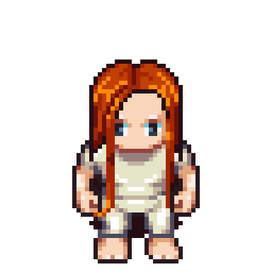
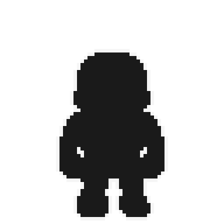
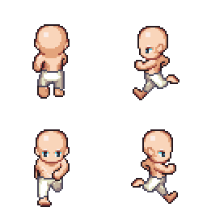
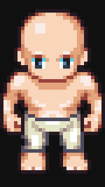
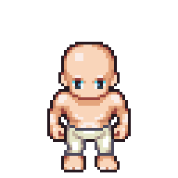

LPC Sheet to Video — apa saja yang sudah dibangun
Tiga CLI pure-Node yang mengubah sprite LPC menjadi animasi bergerak:
menjahit lembaran PNG (dekode + komposisi + trim) di dalam Node, lalu mengencode
GIF langsung dari Node dan MP4/WebM lewat ffmpeg. Sengaja tanpa satu pun
dependensi npm — jalankan langsung dengan node, tanpa npm ci.
Tiga CLI di tools/video/
Semua berkas baru adalah .ts, berjalan langsung lewat node --experimental-strip-types. Contoh di bawah cukup diketik apa adanya.
lpc-video.ts
Satu sheet (atau folder berisi frame PNG bernomor) → GIF / MP4 / WebM, plus urutan PNG untuk editor video. Ini CLI utama: layer OK, siklus animasi dari app, trim, fit rasio, gaya silhouette.
lpc-batch.ts
Satu folder berisi sheet per-animasi → satu klip per animasi dalam sekali jalan. Nama berkas menentukan siklus (walk.png → siklus walk); layer mengikuti template {name}. Klip yang gagal tidak menghentikan run; exit code non-zero bila ada yang gagal.
lpc-reel.ts
Manifest JSON berisi banyak klip → satu video utuh dengan gap antar klip (freeze: ulangi frame terakhir, atau blank: frame kosong). Trim dihitung dari gabungan semua klip supaya ukuran frame seragam dari awal sampai akhir.
Hasil nyata dari CLI ini
Lima klip di bawah dirender langsung oleh tool di folder ini — bukan mock-up. Bagan warna gelap sengaja dipilih supaya GIF transparannya kelihatan.

body + celana + t-shirt + kepala + rambut xlong dijahit per sel 64px.
node lpc-video.ts body/walk.png \ --layer legs/walk.png --layer tshirt/walk.png … \ --cycle walk --scale 6 --out walk-layers.gif

Posterisasi tokoh jadi satu tinta datar + garis 1px di sekelilingnya.
--style silhouette \ --ink #1a1a1a --outline #f5f5f5

up · left · down · right dijahit jadi satu frame komposit 128×128.
--direction all --scale 2

Frame dipotong ke union box tinta semua frame, lalu letterbox di canvas rasio w:h apa pun (9:16, 1:1, 4:3, …).
--trim --fit 9:16 --bg #101010

Walk 1.6s → gap 4 frame freeze → slash kanan. Semua akurasi timing dikontrol manifest reel-demo.json.
node lpc-reel.ts reel-demo.json \ --out reel-combined.gif
Kemampuan utama
Sisa detail daftar opsi lengkap ada di tools/video/README.md.
ANIMATION_CONFIGS dipakai ulang, jadi loop CLI persis dengan preview generator (contoh walk memutar kolom 1–8, melewati frame jeda duplikat).--loop pingpong untuk siklus lokomosi, --hold n untuk membaca lebih lambat, --duration <detik> mengulang siklus sampai durasi terpenuhi.--frames dir untuk editor videoTulis frame-0001.png… dengan ukuran final (trim/fit sudah dijalankan) langsung siap dibawa ke DaVinci/Premiere/After Effects.ffmpeg hanya dipanggil proses eksternal untuk MP4/WebM (opsi FFMPEG env atau PATH).Format keluaran
| Format | Gunakan untuk | Alpha | Perlu ffmpeg |
|---|---|---|---|
.gif | Berbagai di chat/issue/dokumen, preview sprite | 1-bit | tidak |
.mp4 | Editing di editor video, upload, klip panjang | tidak | ya |
.webm | Overlay web butuh transparansi lembut | yuva420p | ya |
--frames | Presisi frame-per-frame di editor | penuh | tidak |
Cara kerja di balik layar
- render.ts — deteksi
ffmpegdari envFFMPEGatau PATH, atur argumen encoder per format, tulisframe-%04d.pngbila--framesdi-set. - sheet.ts — potong grid jadi frame, atur siklus, gabung up·left·down·right jadi grid 2×2 saat
--direction all. - image.ts — stack transparan per piksel, trim ke union box, pad utk fit rasio (nearest-neighbour skala).
- gif.ts — encoder GIF pure-Node: LZW + palet median-cut + sentinel warna transparan yang disiapkan terpisah bila latar solid.